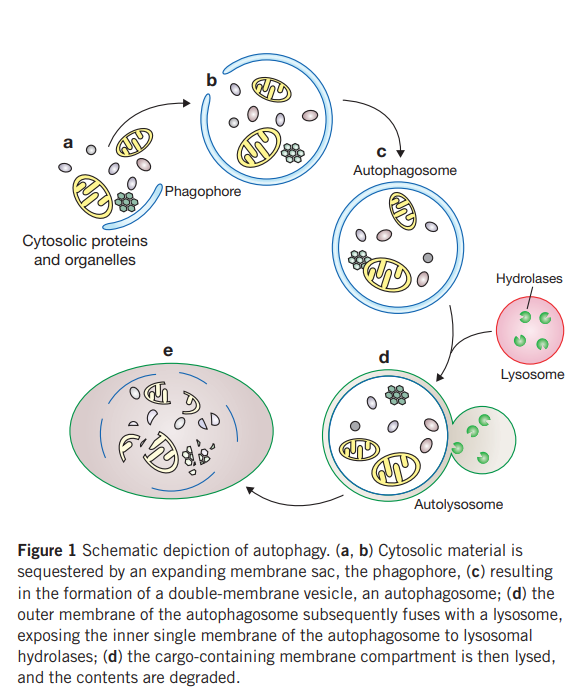
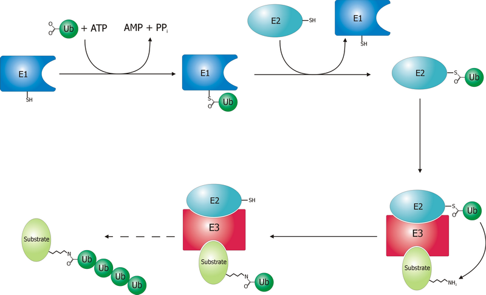

12 자가포식
12.1 자가 포식의 개요
시냅스 가지치기는 C4에 의해 표지가 붙은 시냅스를 신경교세포가 trogocytosis1라는 과정을 거쳐 제거하는 현상이다.Section 11.3 이와 유사하지만 조금 다른 개념으로, 세포가 자신에게 더 이상 불필요한 구조를 스스로 제거하는 현상을 자가 포식(autophagy)2이라고 한다. 자가 포식은 세포 내의 노폐물, 퇴행성 단백질이나 수명이 다한 세포소기관 (organelle)을 제거하는 기전이다. 세포 자체가 도태되는 것은 아니기 때문에 세포자멸사3와는 다르다. 불필요해진 세포 내 기관들은 일단 자가포식체 (autophagosome)라고 불리는 소포 내에 격리되고, 이 소포는 다시 리소좀 (lysosome) 내에 있는 효소에 의하여 분해된다.(?fig-depiction-autophagy) 필요없어졌다는 표식으로 시냅스에 C4가 붙듯이, 세포 내 구조물이 필요없어지면 ubiquitin4이라는 표지자가 붙는다. 세포 내에는 자가 포식 외에도 ubiquitin-proteasome system (UPS)이라는 노폐물 제거 기전이 있지만, ubiquitin을 표지자로 사용하는 점은 공통적이다.[1]
1 trogocytosis: 세포가 다른 세포를 갉아 먹는다는 뜻. Trogo는 그리스어로 “갉아먹는다(영어로는 gnaw)”는 뜻이 있다. 대표적인 예는 림프구가, 항원을 부착하고 있는 다른 세포로부터 항원이 붙은 세포막의 일부를 뺏아와 자신(림프구)의 세포막 표면에 부착하는 경우이다.
2 autophagy: 스스로(auto) 먹는다(phagy)는 뜻
3 세포자멸사(apoptosis): 기능을 하지 못하거나 손상된 세포가 제거되는 기전은 크게 세포자멸사와 괴사(necrosis)로 나눌 수 있다. 이중 전자는 염증세포를 동반하지 않고 세포 자체에서 일련의 과정을 거쳐 스스로 DNA가 조각나고 세포질이 응축되면서 소실되는 것으로 소위 programmed cell death라고 한다. 반면 후자는 외부 염증세포에 의해 세포가 제거되는 것을 말한다. 이 두 기전과 달리 자가 포식은 세포가 자신의 일부를 제거하는 과정이다.
4 Ubiquitin은 후성유전학적 과정의 하나인 히스톤 변형(6-6-4-1절)을 포함한 광범위한 단백질의 번역 후 변형(post-translational modification)에 관여한다. (6-6-4-5절)
세포 분열이 활발하게 일어나는 조직에서는 세포가 기능을 제대로 하지 못하면 세포 자체를 폐기하면 되지만, 분열이 일어나지 않는 신경세포는 더더욱 자가 포식과 UPS에 의존해서 세포 기능을 최대한 오래 유지해야한다. 두 기전은 외부에서 유입되는 다양한 유해 자극(harmful stimuli)으로부터 신경세포를 보호하지만, 작용이 지나치면 오히려 autosis5라는 과정을 거쳐 세포를 죽음으로 이끌 수 있다.[3] 따라서 자가 포식의 균형을 맞추는 것은, 정신과 질환의 발병은 물론 그 치료에 있어서도 간과할 수 없는 부분이라 하겠다.[4,5]
5 Autosis는 세포자멸사도 괴사도 아닌, 세포가 죽어가는 제 3의 기전이다. 앞의 두 기전과는 세포의 형태학적 생화학적 변화가 다르다. 자가 포식 과정 중, 세포 주변의 영양분 고갈이나 허혈상태, reserpine과 같은 약물 등에 의해 자가포식체의 양이 너무 많아지면 autosis 과정이 시작된다.[2]

From [6]
12.2 조현병에서의 자가 포식
12.2.1 자가 포식과 치료 전략
자가 포식은 세포 내의 항상성을 유지하고 유해 자극으로부터 세포를 지켜내기 때문에, 문제가 생기면 각종 신경퇴행성 질환이 일어날 것이라 예상할 수 있다. 알츠하이머 병, 파킨슨 병, 헌팅턴 무도병 등은 그 대표적인 예이다.[7] 조현병에 있어서도, 자가 포식을 담당하는 유전자의 mRNA 농도가 환자와 대조군 사이에 차이가 난다는 보고가 있다.[8] 특히 이런 차이는 측두엽의 관자이랑(superior temporal gyrus) 부위에서만 드러나며, 전두엽에서는 두드러지지 않았다. 잘 알다시피 측두엽은 양성 증상을 일으킨다고 알려진 부위이다.[9] Merenlender-Wagner 등[10]에 의하면 조현병 환자의 해마에서는 자가 포식 관련 유전자인 Beclin-1과 BCL2의 mRNA가 줄어들어있으며6, ADNP7는 반대로 증가되어 있다. 이러한 변화양상은 모두 정상적인 자가 포식을 방해하는 역할을 하며, 조현병에서 나타나는 신경퇴행이 자가 포식이 제대로 일어나지 못하기 때문이라는 가설이 제시되었다.
6 Beclin-1 (BECN1)과 Beclin-1-interacting protein (BCL2)는 자가 포식 및 세포자멸사를 담당한다. 종양 생성과 신경퇴행에 관여하고 있으며, 유방암, 난소암, 전립선암 등에서 BECN1의 변이가 발견된다. 또한 이들 종양에서 Beclin-1 mRNA가 줄어들어있으며, 그 감소 정도가 심할수록 예후가 불량하다.[11,12]
7 Activity-dependent neuroprotective protein (ADNP): 중추신경계의 정상적인 발달은 물론, 성인의 신경계에서 유해 자극에 대해 신경세포를 지키는 역할을 한다. 축삭을 따라 자라나는 미세소관의 말단 부분을 보호하며, 미세소관을 통한 물질 이동(axonal transport)을 활성화한다. 원래 ADNP는 1,102개의 아미노산으로 이루어져 있으며, 이중 활성에 가장 중요한 8개 아미노산 서열만 떼어낸 것이 NAP(davunetide)이다. (6-7-3-1절) 조현병을 비롯하여, 자폐증, 알츠하이머 병 등에서 변이가 발견된다.
만약 자가 포식이 일어나지 않아 조현병 위험이 높아진다면, 자가 포식을 유도하는 물질을 사용하면 치료에 도움이 될 지도 모른다. 예를 들어 reserpine은 오래전부터 자가 포식을 증가시킨다는 것이 알려져 있다.[13] Reserpine은 자가포식체를 증가시키고, p62와 α-synuclein8이라는 자가 포식 관련 단백질을 증가시킴으로써 신경세포의 autosis를 유도한다.[14] 항정신병 약물 중에서도 trifluoperazine, fluspirilene, pimozide는 자가 포식을 유도할 수 있다.[15] 자가포식체의 개수만으로는 세포 내 소기관의 분해 정도를 정확히 알 수 없기 때문에, 요새는 autophagy flux를 측정하여 이를 자가 포식의 정도로 삼는다.9 항정신병 약물 중에는 자가 포식을 증가시키는 선에서 멈추는 약물이 있는가 하면, autosis까지 유도하는 약물도 있다. 리스페리돈과 할로페리돌은 전자에 속하는 반면, 피모자이드, 올란자핀, 클로자핀 등은 후자에 속한다. [5,17] 본서의 저자들 역시 클로자핀이 쥐의 전두엽에서 AMPK-ULK1-Beclin1 신호전달계를 매개로 하여 자가 포식을 증가시킨다는 것을 밝힌 바 있다.[18]
8 α-synuclein: 주로 신경세포에 분포하는 단백질로, 시냅스 전 뉴런에서 소포의 이동 및 재활용, 신경전달물질의 분비를 조절하며, 원활한 자가 포식 과정을 방해하여 autosis 쪽으로 유도한다. 뉴런에 비정상적으로 α-synuclein이 축적되는 질환군을 synucleopathies라고 하는데, 파킨슨 병, 루이소체 치매, 다계통 위축증(multiple system atrophy)가 대표적인 예이다.
9 과거에는 자가 포식의 정도를 측정하기 유해 전자현미경으로 자가포식체의 양을 측정하기도 하였는데, 현재는 LC3-II라는 단백질의 생성과 분해량을 측정하여 autophagy flux의 지표로 삼는다.[11,16]
자가 포식 유도체를 이용하여 조현병을 치료할 수 있을 지는 아직 가설 단계에 머물고 있다. 자가 포식이 제대로 이루어지지 않으면 신경퇴행이 발생할 수 있다고 했지만, 지나친 자가 포식과 autosis 역시 동일한 결과를 초래할 수 있기 때문이다. 예를 들어 할로페리돌과 클로자핀은 다발성 경화증 환자에서 오히려 지나친 자가 포식을 차단함으로써, 신경세포가 탈수초화되는 것을 막아준다.[19] 장기간의 항정신병 약물 치료는 오히려 인지 기능을 망가뜨리고, 신체의 당대사 과정을 혼란에 빠뜨리는데, 이 과정에 지나친 자가 포식과 autosis가 관여하고 있을 가능성이 있다. 결국 건강과 질병 상태를 구분하는 것은 위태롭기 짝이없는 균형 상태일 것이다. 이런 의문들 모두 앞으로 연구되어야 할 산적한 과제들이다.
12.3 다양한 자기 포식 기전
12.3.1 Ubiquitin-proteasome system
Ubiquitination은 단백질의 번역 후 변형(post-translational modification)의 한 기전으로서, ubiquitin이 단백질에 붙어 폐기처분되어야 함을 알리는 과정이다.(6-6-4-1절) 세 단계로 이루어지는데, 첫번째 단계에서는 E1에 ubiquitin이 붙고, 두번째 단계에서는 E1에 붙어있던 ubiquitin이 E2로 옮아가며, 세번째 단계에서는 E2-ubiquitin이 E3를 매개로 하여 기질이 될 단백질이 붙으면서 ubiquitin이 기질 단백질로 옮아간다.(그림 12.1)10 기질 단백질에 한번 ubiquitin이 붙으면, 주변의 ubiquitin이 줄줄이 붙게 되는데, 결과적으로 polyubiquitinated protein을 만들어낸다. Polyubiquitin 사슬은 단백분해효소(proteasome)에 의해 인식되기 때문에, 기질 단백질은 짧은 펩타이드로 분해되어 재활용된다. Ubiquitin 역시 ubiquitin 제거 효소(deubiquitinating enzyme, DUB)에 의해 떨어져나가 재활용된다.[20]
10 E1은 ubiquitin-activating enzyme, E2는 ubiquitin conjugating enzyme, E3는 ubiquitin-protein ligase라고 한다.

Ubiquitin-proteasome system (UPS)가 이렇게 복잡한 이유는 그만큼 세포 건강에 중요하며 세심한 조절을 받고 있다는 증거이다. 동일한 세포 내에서도 위치에 따라 활성이 다르며, 수상돌기 하나하나마다 따로 조절을 받고 있다. 수상돌기 간극이 분해되는 주요한 기전으로 여겨지며, 새로운 기억이 만들어지기도, 지워지기도 하는 과정의 핵심 요소라고 여겨진다.[21] 신경세포에서는 단백질 분해 과정 말고도, 뼈대 단백질의 유지, 신호전달을 위한 복합체의 형성 등에 관여한다.[22]
항정신병 약물과 UPS의 관계는 pimozide의 항암 효과에 대한 연구를 통해 조명을 받기 시작하였다. Pimozide가 유방암을 비롯한 다양한 암 세포의 증식을 억제한다는 것은 1990년대 초부터 잘 알려져 있었다.[23] 이에 대한 연구는 최근까지도 활발히 이어져왔으며 유방암 뿐 아니라 폐암, 전립선암 에서도 동일한 효과가 관찰되었다.[24] 항암 효과를 나타내는 기전에 대해선 여러가지 가설이 제기되었으나, pimozide가 대표적인 USP1/UAF1 복합체의 억제제라는 것이 부각되었다.11 물론 조현병 환자의 신경세포에서 일어나는 프로세스와 암세포에서 일어나는 프로세스가 같지는 않겠지만, 항정신병 약물의 항암작용으로부터 단서를 얻은 연구자들은 조현병 환자의 USP 상태를 살펴보기 시작하였다.
11 Ubiquitin-specific protease (USP1)은 대표적인 DUB 중 하나이며, USP1-associated factor 1 (UAF1)은 USP1에 붙어 활성을 높여준다. DUB의 기능은 이중적인데, 한편으로는 E3의 활성을 억제하여 단백질에 ubiquitin이 부착되는 것을 방해하기 때문에, 단백질 분해를 막고 안정화시킨다. 하지만 다른 한편으로는 ubiquitin을 재활용하여 세포질 내의 ubiquitin 저장량을 일정하게 유지함으로써 새로운 ubiquitination이 원활하게 진행되도록 한다. 적어도 암세포에서 pimozide는 USP1을 억제하여 ubiquitination이 제한없이 일어나도록 하며, 이는 DNA 구조를 유지하는 단백질들을 분해하여 세포사멸에 이르게 한다.[25]
비교적 분명한 연구결과를 보여주는 것은 또 다른 DUB인 UCHL112으로, 이 효소는 뇌에 집중적으로 분포하며 신경세포에서 노화된 단백질 혹은 잘못 접혀진 단백질13을 제거하는데 중요한 역할을 한다. 조현병과 관련해서, 환자의 DLPFC에서 UCHL1의 mRNA 농도가 감소되어있으며, 혈중 UCHL1 농도는 PANSS 총점과 상관관계에 있다는 것이 발견되었다.[26–28] 그 밖에도 ubiquitin 경로를 구성하는 몇 가지 유전자들의 발현양이 대조군에 비해 유의하게 감소되어 있으며[29], 조현병 환자 특히 치료저항성 환자에서 ubiquitin이 결합된 단백질 농도가 높다.[30]
12 Ubiquitin carboxyl terminal esterase L1 (UCHL1): DUB의 하나로 신경세포 생성에 중요한 역할을 한다. 악성 뇌교종(glioma) 발생에 중요한 역할을 하리라 믿어지고 있다.
13 단백질의 기능은 1차원적 아미노산 서열이 접히면서 형성하는 3차원 구조에서 비롯된다. 동일한 아미노산 서열을 갖고 있더라도 세포 내의 제반 상태에 의해 잘못 접힐(misfolded) 수 있는데, 그러면 제 기능을 발휘하지 못하게 된다. 대표적인 예로 알츠하이머병에서는 잘못 접혀진 amyloidogenic precursor 단백질이 침착되면서 amyloid plaque를 형성한다. 이러한 질환들을 protein misfolding disease라 부른다.
항정신병 약물의 기전 중에도 ubiquitin 관련 단백질들이 등장한다. 클로르프로마진이나 할로페리돌을 투여하면 다수의 단백분해효소(proteasome) 활성이 증가한다. 조현병 환자에서 관련 단백질의 혼란이 초래되어 있다면, 항정신병 약물이 이를 바로잡아줄 가능성이 없지 않다.[31]
12.3.2 N-degron과 C-degron
불필요해진 수상돌기 간극을 제거할 때 trogocytosis 및 자가 포식 기전이 작용하며, 여기에는 UPS를 통해 역할을 다 한 단백질을 제거하는 과정이 개입된다. 그렇다면 애초에 제거해야할 단백질을 어떻게 알아보는 것일까? 이는 단백질의 N-terminal과 C-terminal에 그 열쇠가 있다.
단백질의 양쪽 말단 즉 N-, C-terminal과 그 주위 서열에는 ubiquitin이 부착될 수 있는 lysine 기가 집중적으로 분포하고 있는데, 이를 각각 N-degron, C-degron이라고 칭한다.14 한편 N-, C-degron의 분해 개시 신호를 알아보고 실제 분해를 담당하는 경로를 각각 N-, C-degron pathway라고 한다.[33,34]
14 N-degron이 먼저 발견되었기 때문에, 한때 학자들은 단백질 분해가 N-terminal의 신호로부터 비롯된다고 생각하고 이를 N-end rule이라 명명하였다. 그러나 이후에 C-degron과 이에 대응하는 C-degron pathway가 차례로 발견되었다.[32]
UPS는 넓은 의미에서 N-, C-degron pathway의 한 부분이다. N-degron이 활성화되는 과정의 예를 들자면, Arg-transferase은 N-terminal에 위치한 Asp, Glu, Cys 아미노산에 arginine을 붙여준다. Arginine이 결합된 N-terminal은 E3에 의해 인식되기 때문에, UPS 과정을 통해 ubiquitin이 붙을 수 있다.[35] Arg-transferase를 매개로 한 경로에 의해 분해되는 단백질에는 RGS415가 포함되어 있다. 그런데 클로자핀은 E3가 인식하는 N-degron과 상호작용함으로써, RGS4에 ubiquitin이 붙는 것을 방해한다. RGS4는 전전두엽에서 도파민 신호전달을 안정화시키는 역할을 하므로, 클로자핀의 이로운 효과 중 하나가 N-degron pathway를 통하여 도파민 신호를 안정화하는 것이라 짐작해볼 수 있다.[38]